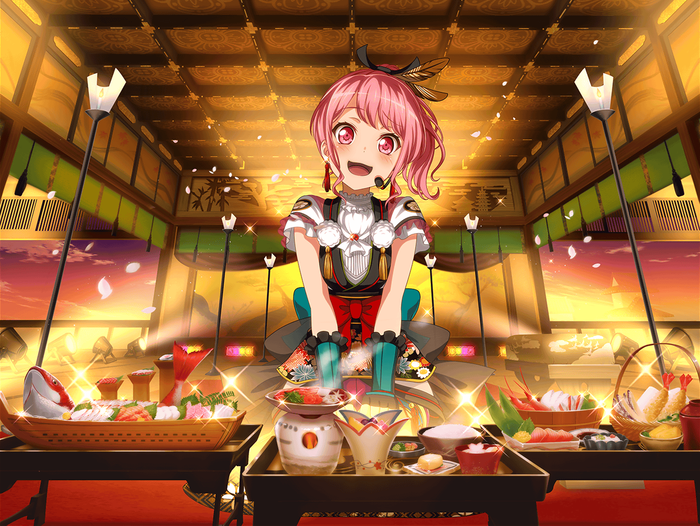

駅前
彩
あ、{{userName}}さん！
彩
おはようございます！
朝早いですね
彩
今からお仕事なんですか？
実は私もなんです！
彩
これからCDショップで
イベントがあるんですよ～
彩
そうです！ 新曲のリリースイベントです！
いろんなお店を回って、宣伝させてもらってるんです！
彩
えへへ、楽しみなの、
そんなに顔に出てましたか？
彩
やっぱりイベントってすっごく楽しいです！
彩
来てくれたお客さんが、
笑顔になって帰る……
彩
それを見ると、私もとっても
幸せな気持ちになります！
彩
自分がこんなふうにイベントをやって、
人を笑顔にできるようになるなんて、
練習生だった頃からすると信じられないです！
彩
でもイベントって思ったより、
いろんなことがありますね……
彩
あ、{{userName}}さんも知ってたんですね。
そうなんです、この前のイベントでは
ファンの人同士でケンカになっちゃって……
彩
あの時はみんなどうしよう、って
すっごく慌てちゃいました
彩
でも、イヴちゃんが先頭に立って解決してくれたんです！
彩
あの時のイヴちゃん、すっごくかっこよかったんですよ！
彩
普段はどちらかというと、
ほんわか系ですけど……
彩
いざという時はすごく頼りになって、
イヴちゃんがサムライみたいに見えました！
彩
それに比べて、私はどうしていいか
わかんなくって、泣いちゃったんです……
彩
本当なら私の方が年上なんだから、
しっかりしなくちゃいけないのに……
彩
私、すごくカッコ悪いですよね……
彩
えっ、なぐさめてくれるんですか？
あ、ありがとうございます……！
彩
でも、イヴちゃんが頑張ってるのを見て、
私も負けてられないな、って思いました！
彩
今度何かあったら、その時は
イヴちゃんだけじゃなくって、
私もパスパレを支えられるようになりたいんです！
彩
……な、なれると思いますか？
彩
えへへ、そう言ってもらえると頑張ろうって思えます！
彩
あ、長々と引き止めちゃってすみません！
これからお仕事なのに……
彩
でも、ありがとうございます！
お話を聞いてもらって、ますますやる気が出てきました！
彩
{{userName}}さんの期待に応えられるように、
私、頑張ります！
彩
だからこれからもパスパレの活動、
見守っていてくださいね！